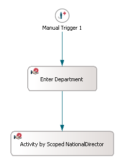
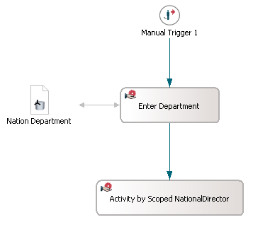
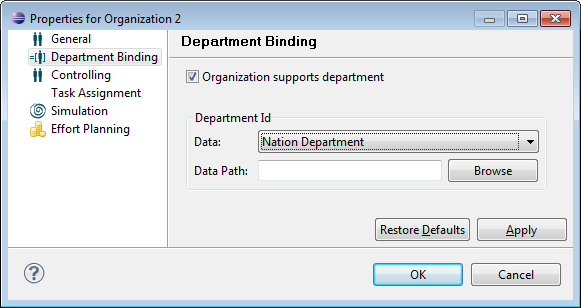
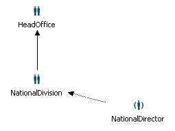
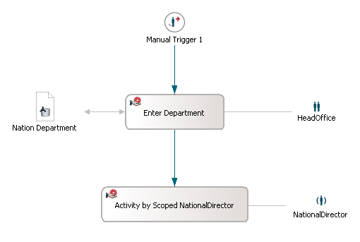
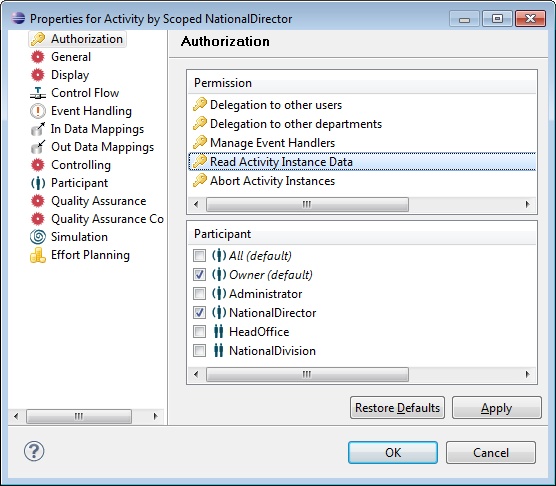

In a dynamic Web project, create a new model by choosing File > New > Other > Process Manager Wizards > Process Model in the main menu. Rename the default process definition to Report Demo.
For detailed information on creating dynamic Web projects for usage with the Stardust Portal, please refer to the Rapid Application Development guide.
Continue with the following:
Open the diagram of the Report Demo process definition. Create a manual trigger and two subsequent activities. Name the activities Enter Department and Activity by Scoped NationalDirector as demonstrated in the following screenshot:

Figure: Reporting Use Case Example Workflow
Create the primitive data Nation Department, which will be used as data path for the department defined for the organizations.
Assign this data as In- and Out-data mapping to the activity Enter Department. Thus, the different department values are determined via this activity.

Figure: Adding Department Primitive Data
For information on how to create data and data mapping, please refer to the chapter Specifying Data and Specifying Data Mappings of the Modeling Guide accordingly.
Now bind the department data to the organization NationDivision:

Figure: Department Settings for NationDivision
In the default diagram, create two organizations, HeadOffice and NationalDivision. Assign the NationalDivision organization as suborganization of HeadOffice. Create a role NationalDirector and connect it with a Manager Of connection to NationalDivision.

Figure: Organizational Structure
For information on creating and assigning organizations, please refer to the chapter Defining Roles and Organizations of the Support Case Example tutorial.
Set the following performers:
Now the model should look like in the following diagram screenshot:

Figure: Reporting Use Case Example Diagram
Now change the default authorization set for the grant Reading Activity Instance Data:

Figure: Setting the Authorization